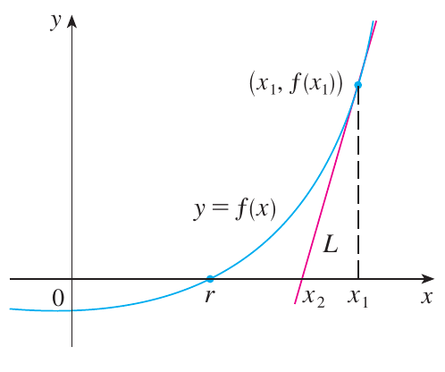
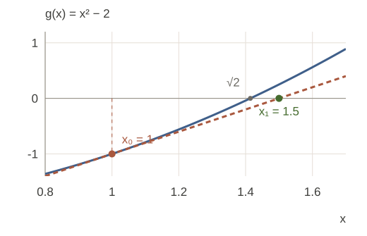
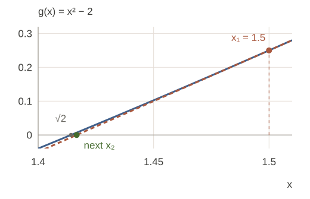
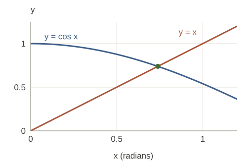
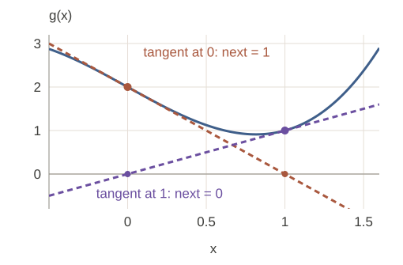
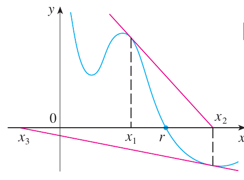
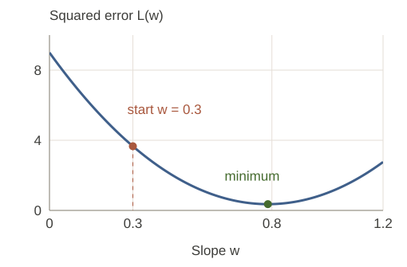
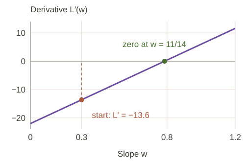

MA1508 Calculus · Chapter 4 · Section 4.7
Newton's Method
Approximate a root of an equation using successive tangent lines. Learn how to perform the iteration and how to recognise failure.
Textbook reading: Stewart §4.7 (book pp. 312–316). Prerequisites: derivatives, tangent lines and linear approximation.
SEE ONE STEP BEFORE USING THE FORMULA
A tangent turns a curved problem into a line
We want the positive root of \(g(x)=x^2-2\). Start at \(x_0=1\), go up to the curve, and draw its tangent. Where does that straight line cross the horizontal axis?
Step 0: current guess x₀ = 1.0000000000; g(x₀) = −1.0000000000.
First draw the tangent, then use its intercept as the new guess.
1. The tangent-line construction

To solve \(g(x)=0\), choose a starting approximation \(x_0\). At \(x_n\), replace the curve by its tangent line:
Its horizontal intercept is the next approximation. Set \(y=0\) and solve for \(x\):
This derives the iteration, not a guarantee that it converges. Keep all working digits and round only the final answer.
2. Worked example: the square root of 2
Solve \(g(x)=x^2-2=0\) with \(x_0=1\), taking four Newton steps.
Show answerHide answer
- \(g'(x)=2x\), so \[x_{n+1}=x_n-\frac{x_n^2-2}{2x_n}=\frac12\left(x_n+\frac2{x_n}\right).\]
- The first step is \(x_1=\frac12(1+2)=1.5\). The second is \(x_2=\frac12(1.5+2/1.5)=1.4166666667\).
- Continuing without rounding intermediate values gives \(x_3\approx1.4142156863\), \(x_4\approx1.4142135624\).
- Check by substitution: \(x_4^2-2\approx4.51\times10^{-12}\) when the unrounded iterate is used. This small residual supports the approximation; the printed decimal is rounded.
| n | Approximation \(x_n\) (rounded) |
|---|---|
| 0 | 1 |
| 1 | 1.5 |
| 2 | 1.4166666667 |
| 3 | 1.4142156863 |
| 4 | 1.4142135624 |
The actual first two steps for \(g(x)=x^2-2\)
Step 1: start below the root

Step 2: zoom in on the overshoot

3. Worked example: an equation without an elementary solution
Use \(x_0=1\) to approximate the solution of \(\cos x=x\). Use radians.

Show answerHide answer
- Write \(g(x)=\cos x-x\), so \(g'(x)=-\sin x-1\). The iteration is \[x_{n+1}=x_n-\frac{\cos x_n-x_n}{-\sin x_n-1}.\]
- At \(x_0=1\), \(g(1)\approx-0.4596976941\), \(g'(1)\approx-1.8414709848\), giving \(x_1\approx0.7503638678\).
- The next iterates are \(x_2\approx0.7391128909\), \(x_3\approx0.7390851334\), \(x_4\approx0.7390851332\).
- Existence and uniqueness on \([0,1]\): \(g(0)=1>0\), \(g(1)<0\), and \(g'=-\sin x-1<0\). Continuity gives a root and strict decrease gives at most one.
4. When Newton fails
For \(g(x)=x^3-2x+2\), start at \(x_0=0\). Find two steps.
Show answerHide answer
- \(g'(x)=3x^2-2\). Thus \(x_1=0-2/(-2)=1\).
- At \(x_1=1\), \(g(1)=1\), \(g'(1)=1\), so \(x_2=1-1=0\). Every later step repeats \(0\to1\to0\). Neither point is a root.
The tangents send us back and forth


For \(g(x)=x^2-2\), the start \(x_0=0\) makes the denominator zero. A very small denominator may produce a very large step. A start far from a root may leave the function's domain or approach another root.
5. Accuracy and stopping
- Check both the step \(|x_{n+1}-x_n|\) and the residual \(|g(x_{n+1})|\), with tolerances suitable for their scales.
- Check that the derivative is not zero and that the iterates remain in the domain.
- Use a maximum number of steps; report failure rather than silently accepting a cycle.
- A small residual alone is not a universal bound on root error, especially near a very flat root.
Optional explanation. For the square-root example, let \(r=\sqrt2\) and \(e_n=x_n-r\). Direct algebra gives \(e_{n+1}=e_n^2/(2x_n)\). Once \(x_n\) is close to \(r\), this explains the rapid error reduction. General local quadratic convergence needs a simple root \(g'(r)\ne0\), appropriate smoothness (for example \(g\) twice continuously differentiable nearby), and a sufficiently close start. It is not a global promise.
6. From root finding to optimization
Optional background. In §4.6 we wanted a maximum or minimum of an objective. For a differentiable objective \(L(w)\), an interior stationary candidate satisfies \(L'(w)=0\). So use Newton's construction on the derivative graph, with \(g=L'\):
Why divide by the second derivative?
Near the current guess, approximate the derivative by its tangent: \(L'(w)\approx L'(w_n)+L''(w_n)(w-w_n)\). Setting this straight-line approximation to zero gives the update above. The second derivative tells us how quickly the slope changes, so it sets the distance to the predicted zero slope.
The same step can also be seen as choosing the stationary point of a local quadratic model:
When \(L''(w_n)>0\), this quadratic model opens upward and its stationary point is its minimum. This is a local approximation; the original objective still needs the checks from §4.3.
Reuse the three observations \((1,1),(2,2),(3,2)\) and the fitted line \(\hat y=wx\). Their squared-error loss is \(L(w)=14w^2-22w+9\). Start at \(w_0=0.3\). Predict: where does the derivative become zero?
Show answerHide answer
- \(L'(w)=28w-22\) and \(L''(w)=28\). At \(w_0=0.3\), the slope is \(-13.6\).
- Newton gives \(w_1=0.3-(-13.6)/28=11/14\approx0.7857\).
- The derivative is already a line, so its tangent is exact: one step finds its zero. Equivalently, the quadratic model is the original loss itself.
- Since \(L''=28>0\) everywhere, this candidate is the unique global minimum. The squared error falls from \(L(0.3)=3.66\) to \(L(11/14)=5/14\approx0.3571\).
A minimum on one graph is a zero on another
The objective: look for the bottom

The derivative: look for zero slope

For another objective, a stationary point may be a minimum, a maximum or neither. Newton steps need not decrease the objective. Check the curvature, the domain and the objective values; training algorithms and multivariable extensions are outside this chapter.
7. Check your understanding
For \(g(x)=x^3-5\), write the Newton iteration and take two steps from \(x_0=2\).
Show answerHide answer
- \(g'(x)=3x^2\), so \(x_{n+1}=x_n-(x_n^3-5)/(3x_n^2)\).
- \(x_1=2-3/12=7/4=1.75\). Then \(x_2=7/4-(343/64-5)/(147/16)\). Evaluating the fraction without intermediate rounding gives \(x_2=503/294\approx1.7108843537\).